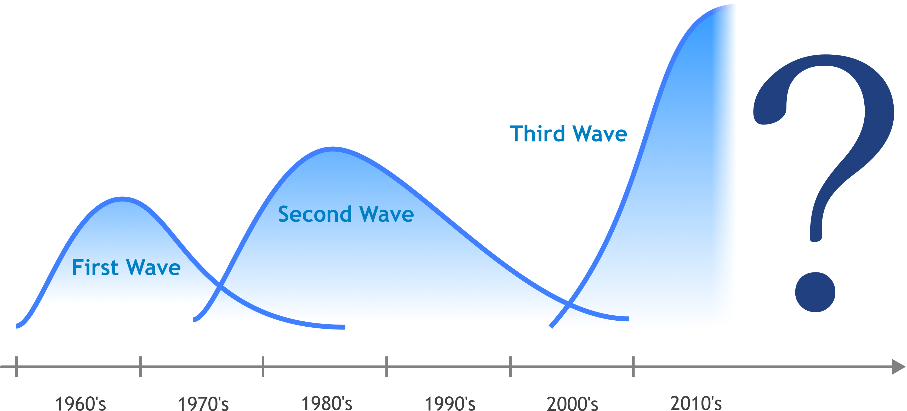

WHAT is AI?
企業におけるAIの活用例

ここからは企業でのAI活用例を紹介していきます。
企業の現場にAIを導入することで、人間にとっては難しい、または時間のかかる仕事でも、効率よく行うことができるようになります。AIを運用するには専門知識が必要で、導入のハードルが高いようなイメージを持たれがちですが、実際にはすでに多くの企業でAIが活用されています。
製造業
製造業では、AIを搭載したロボットを用いて、製造ラインの自動化・長時間の稼働を実現しています。また、画像認識の技術を活用して、不良品チェックの無人化が行われています。これにより、品質管理や検査の負担軽減、人件費の低減などが可能です。
教育
教育の分野では、画像認識の技術を用いたテストの自動採点、またテスト結果を基にした成績評価など、主に事務作業を自動化しています。これによって教師の負担を軽減しています。事務作業を自動化することで人件費の軽減ができるため、教育の低コスト化が可能になります。また、生徒の習熟度に合わせたカリキュラムの作成にもAIが用いられています。
農業
農業分野はITとは遠くかけ離れているイメージがありますが、意外にもAI技術が使われています。農業分野では、土壌状態や栄養状態の特定に活用されています。また、AIカメラを用いると、収穫した商品の大きさや形状などを認識して、規格にあっているものかどうかを判別することが可能です。人間のようなバイアスがなく、常に一定の基準で判断できるため、品質の安定につながります。
医療
医療分野では、画像認識の技術による疾病やがんの早期発見が行われています。AIに腫瘍など病理画像を学習させることで、医師が診断するよりも高い精度でがんを発見することが可能です。
その他にも、伝染病の発生時期の予測や病気の臨床歴、遺伝との関連性調査など、膨大なデータからの予測が必要な問題にAIが活用されています。
販売業
販売の分野では、混雑の状態を分析、通知するシステムに、AIが活用されています。従業員はエリアごとに現在の混雑状況を把握できるため、レジ前の混雑やセールなどに素早く対応することができます。
また、店舗に設置されたカメラの映像から、入店者数、また顧客の傾向を分析することが可能です。これにより、客観的なデータに基づいて仕入れや配置の見直しを行うことができます。
それに加えて、防犯カメラの映像をAIがリアルタイムで分析し、顧客の不審行動の検出を行うことができます。AIによる不審な行動の検出・通知により、万引きを事前に防止するための対策が可能です。